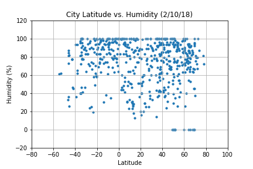

Summary:
After gathering data on over 500 different cities from all over the world, I plotted each city along with its respective latitude and
average humidity level (measured as a percentage) on a scatter plot. This scatter plot does not show any strong correlation between a city's latitude and a city's average
humidity level. However, it is interesting to note that drier climates are only present in regions that are closer to the North Pole (between 40 and 80 degrees latitude).
This phenomenon is most likely due to the fact that the december solstice just passed - meaning the Earth is tilted such that the North Pole is not receiving as much
sunlight compared to the South Pole. As a result, there will be cooler and drier air in the North pole during this time of year.

For the comparison between the other factors, you can click on the button below to head to the conclusion page.
Conclusion